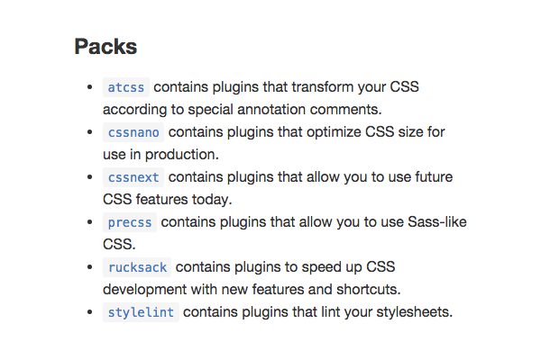
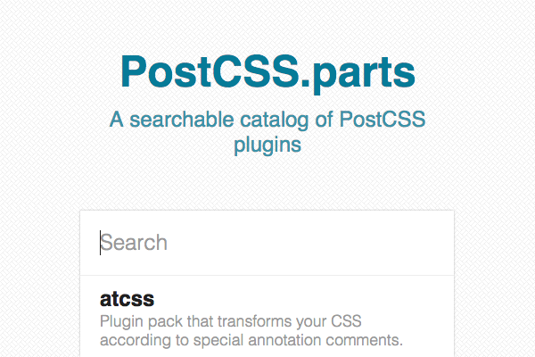
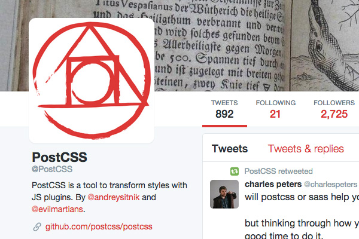

the link of articles
As you will have gathered from the previous entries in this series, PostCSS is all about the plugins. The plugins you choose will completely define your experience with PostCSS.
Given that they are so integral and fundamental, before we move on to actually producing stylesheets via PostCSS, we’re going to take a look at how you can explore the PostCSS plugin ecosystem. Through this you’ll also get a view into how powerful PostCSS is, and how it offers functionality that can’t be equally created through any other existing means.
We’ll cover where you can go to keep tabs on the latest and greatest plugins, the categories these plugins typically fall into, and considerations for how to load all these plugins into projects in a logical way.
Finding Plugins
As you start getting into working with PostCSS there are three locations you’ll want to keep an eye on for finding great plugins.
PostCSS Github Page
The main page of the PostCSS Github repo currently maintains a comprehensive categorized list of plugins. This list does tend to get updated frequently so it’s quite a reliable place to go and see what plugins are available for different aspects of development.

https://github.com/postcss/postcss#plugins
Catalog Site postcss.parts
A relatively new, and very welcome, addition to the PostCSS world is the site postcss.parts, which provides a searchable catalog of PostCSS plugins.

http://postcss.parts
@postcss Twitter
Right now PostCSS is seeing a new and interesting plugins being released on a regular basis. The above two locations don't highlight new plugins so at a glance you won't know if there are items you haven't seen before. For that reason, it's a great idea to follow or frequently visit @PostCSS on Twitter.

https://twitter.com/postcss
Types of Plugins
The breadth of functionality in plugins that can work with PostCSS is huge, so it’s a great idea to have an introduction to the general types of plugins you’re likely to encounter before you move into trialling any of them.
Packs
The fundamental nature of PostCSS is that it provides modular CSS processing. As such, individual plugins are encouraged to only cover a small, tightly defined set of functionality. Megalithic multifunction plugins that do everything at once are discouraged.
That said, sometimes you do want to incorporate a long list of functionality into a project, and you’d rather not have to individually install and configure twenty different plugins. This is where “packs” come into play. Packs bring together several modular plugins under a thematic umbrella, allowing them all to be installed and deployed at once.
For example, the PreCSS pack combines nine separate PostCSS plugins to create Sass-like functionality. The cssnano pack uses around twenty PostCSS plugins to provide CSS minification and optimization. By using these packs you save yourself having to install and load each of the plugins manually.
Future CSS Syntax
Future CSS is all about letting you write syntax we know is coming up in the W3C spec, but might not be fully supported in browsers yet.
For example, you might want to be able to use the upcoming eight or four digit hexidecimal notation to create opaque colors. To generate a slightly transparent blue you could use a color code like #0000ffcc, or its abbreviated form #00fc, and run the postcss-color-hex-alpha plugin to convert that into the widely supported format rgba(0, 0, 100%, 0.8).
The most prominent presence in PostCSS future CSS is the cssnext pack, which brings a great deal of spec compliant future CSS to the table. However, at present its developer Maxime Therouin is taking the pack through a major transition in how it functions. As such, we’ll hold fire on bringing you a future CSS tutorial until the transition is complete.
Fallbacks
Where future CSS is about making tomorrow’s code work in today’s browsers, fallbacks are essentially about making today’s code work in yesterday’s browsers. In a perfect world we’d never have to think about old and outdated browsers, but the reality is that there are still some projects for which supporting legacy browsers is essential. The fallbacks category of PostCSS plugins can help out where that’s the case.
All of these plugins run hands-free, by which I mean you write your code according to current standards, and the plugins will find code that needs legacy fallbacks and automatically insert them as required.
For example, you can have flat colors added in as fallbacks for rgba() colors by the postcss-color-rgba plugin, or add IE8 compatible fallbacks for opacity via the postcss-opacity plugin. The most well known of these plugins is Autoprefixer, which adds vendor prefixes as required, based on data from CanIUse.com.
You’ll learn more about fallback plugins in the upcoming “For Cross Browser Compatibility” tutorial in this series.
Language Extensions
Language extension plugins add functionality to CSS that would otherwise not be there. By comparison, you might consider most preprocessors to be entirely comprised of language extensions. In fact, users of Sass, Stylus and LESS will likely feel quite at home with many PostCSS language extensions, such as those adding mixins, variables, conditionals, loops, nesting, extending and so forth.
Because PostCSS is completely flexible however, there are also language extensions offering functionality not commonly found in preprocessors. For example, the postcss-bem plugin adds syntax specifically for creating CSS that follows the BEM / SUIT methodology, (more on that in a later tutorial). The postcss-define-property plugin allows you to create your own custom properties, or redefine native properties. And the postcss-match plugin allows you to use not only conditionals, but pattern-matching logic in your code.
With this variety all indications are that PostCSS will mature to the point where it can provide much of the functionality many of us look for in preprocessors, but also considerable functionality beyond that.
Colors
Many of the color plugins currently available for PostCSS deal with transforming colors from one format into another, for example from #hex.a to rgba(), hcl(H,C,L) to #rgb, or pantone to #rgb. As well as that, some of the most useful plugins handle color manipulation, such as mixing two colors, or scaling the lightness or darkness of them.
One particular favorite of mine allows you to take your existing color scheme, then output a version as it would appear to people with specific forms of color blindness. There’s nothing like experiencing something first hand to help you gauge how accessible your designs are.
We’ll go into more detail on color plugins in our later preprocessing, shorthand, and “miscellaneous goodies” tutorials.
Images and Fonts
This category of plugins handles a lot of optimization tasks, such as packing Base64 data, generating CSS sprite sheets and SVG optimization. You’ll also find several other types of image and font tools, such as automatic SVG to PNG conversion for IE8, automatic WebP image generation and inclusion for supporting browsers, @font-face shortcuts, retina support shortcuts and more.
Grids
Discovering that grid systems could be written in PostCSS, without needing to load prewritten stylesheets or use preprocessor mixins, was the first thing that really opened my eyes as to how powerful PostCSS is. I had previously thought PostCSS was primarily about filtering and modifying existing CSS, however grid systems show that it can be used to create entire libraries of external styles.
There are currently three grid systems available for PostCSS:
Lost, created by Cory Simmons
postcss-grid, created by Andy Jansson
postcss-neat, created by Jo Asakura
Optimizations
PostCSS optimization plugins fall into two general categories: minification and code modification. Through these plugins you can perform minification tasks like stripping whitespace and comments, and you can also have more complex modifications done like combining matching media queries, inlining @import stylesheets, optimizing font weights, removing empty or duplicate rules and so on.
We’ll cover more on this category of PostCSS plugins in the upcoming “For Minification and Optimization” tutorial.
Shortcuts
As a preprocessor user, I always found one of the biggest benefits was the ability to cut down on the amount of code I had to write through using variables and mixins. Through PostCSS I have discovered even more extensive means to make code writing more efficient via the long list of shortcut and shorthand plugins available.
You can choose to use shorthand for properties, either defining your own or using existing shorthand, for example w instead of width, h instead of height and so on. You can output @font-face code, transform code, triangles and circles all in one line each. And you can shortcut all kinds of common tasks including link styling, centering, clearfixing, positioning, sizing, spacing and outputting color codes.
We’ll go into these plugins in more depth in the “Shortcuts and Shorthand” tutorial.
Analysis & Reporters
PostCSS can also be used for more than transforming CSS, it can also be used to provide feedback as you develop your CSS. Some of the analysis and reporting plugins available include a linter for BEM/SUIT code, a plugin to give you a breakdown of your code via CSSstats, “DoIUse” to let you know how your code lines up with data from Can I Use, and a Modernizr file generator.
Others
There are some great PostCSS plugins that don’t quite fit into a specific category but are far too good to pass over. For example, we have postcss-style-guide which automatically generates a style guide based on your CSS. There’s also the rtlcss plugin, used by WordPress, which generates a right to left version of your stylesheet.
We’ll cover some of these great plugins in the tutorial “Miscellaneous Goodies”.
Fun
The “fun” category includes such gems as postcss-spiffing which allows you to use UK spelling, for example colour instead of color, and well mannered syntax such as !please instead of !important.
You’re unlikely to see any of this category’s plugins used in a real project, however a genuine benefit they offer is to act as easily understandable examples for aspiring plugin developers. Being quite simple and brief, they’re perfect for taking a look inside and seeing the essentials of how PostCSS plugins are made.
Plugin Execution Sequence
One of the main considerations you have to make when loading up the array of PostCSS plugins is the order in which you run them. You’ll have to pause and think through your list, determining if one plugin might need to run after another in order to do what you want it to.
For example, you might use a plugin like postcss-simple-vars that adds support for variables, and you might use it to store an rgba() value like so:
01
02
03
04
05
06
07
08
09
10
11
/* source code */
$color: rgba( 0, 0, 0, 0.5);
.style {
background: $color;
}
/* compiles to: */
.style {
background: rgba( 0, 0, 0, 0.5);
}
You might also want to use a plugin like postcss-color-rgba-fallback to add a flat hexcode as a fallback, giving you:
1
2
3
4
5
/* compiles to: */
.style {
background: #000;
background: rgba( 0, 0, 0, 0.5);
}
In this case you would have to make sure you ran the variables plugin before the fallback plugin.
If you ran the fallback plugin first it would just find background: $color; in your CSS and not know there was an rgba() value for it to work with.
However, by running the variables plugin first, when the fallback plugin runs it will find background: rgba( 0, 0, 0, 0.5); and go ahead and add in the required fallback.
The load order for plugins is something that will change with each set of plugins, so you may find you just need to do a little experimentation sometimes to get everything working together nicely.
Advertisement
Let’s Recap
To sum up exploring PostCSS plugins:
Find plugins at the PostCSS Github repo and postcss.parts
Stay tuned to @PostCSS to learn about new plugins
Plugin packs allow you to install several similarly themed plugins at once
PostCSS plugins fall into many, considerably different categories
When loading your selection of plugins, be sure to consider their execution sequence
In the Next Tutorial
We’ve completed our “Quick Start” guide to PostCSS and we’re ready to jump into the practical and start producing some actual CSS code.
In the next tutorial we’ll start with how to use PostCSS to generate cross-browser compatible code by way of automated insertion of vendor prefixes, and a number of fallbacks for properties with legacy browsers, in particular IE8.
See you in the next tutorial!